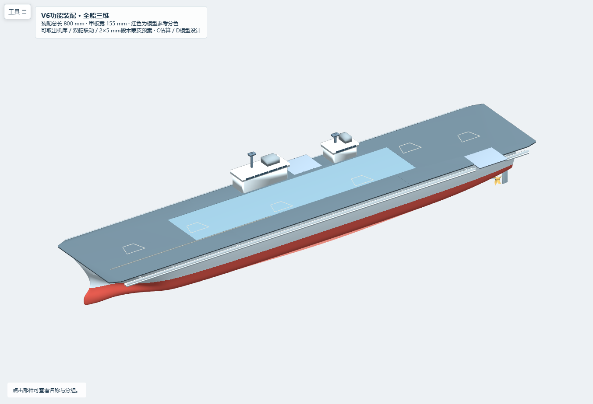
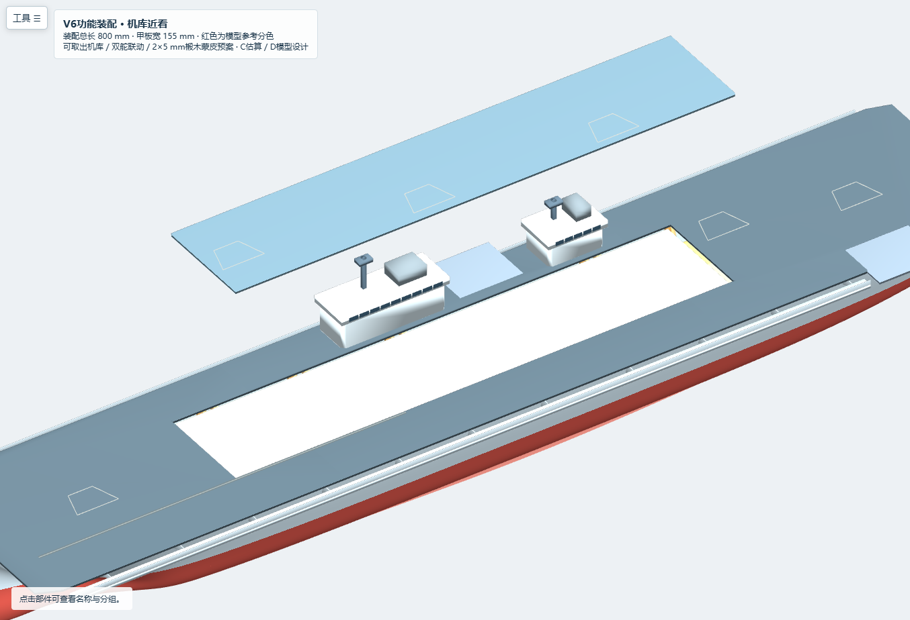
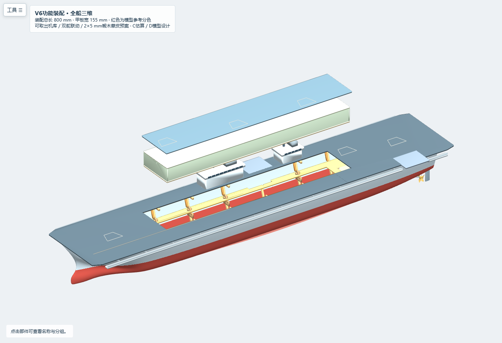
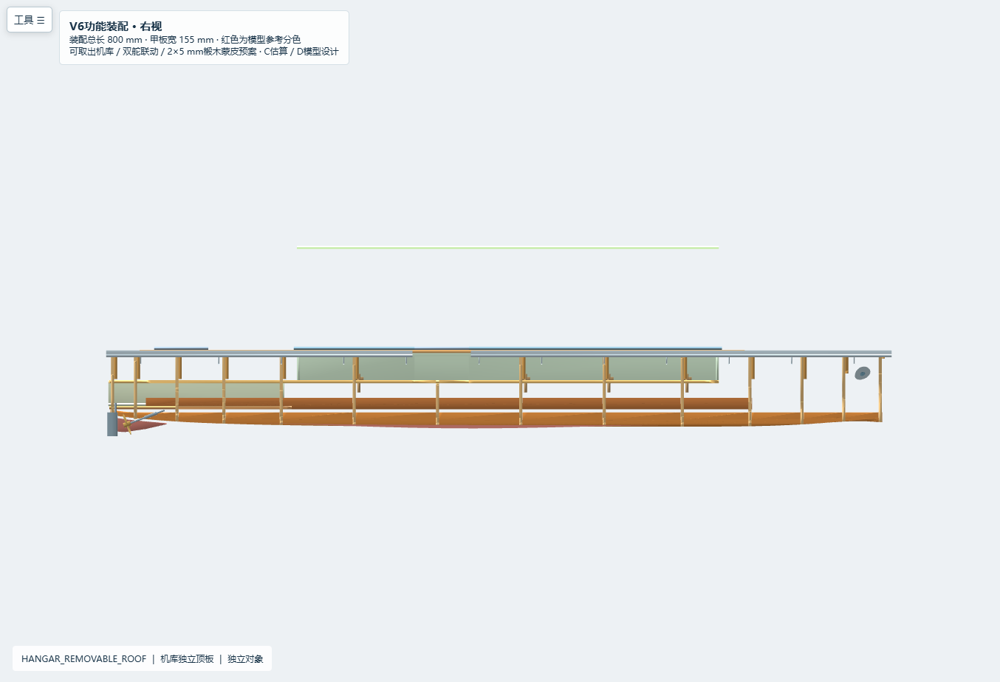
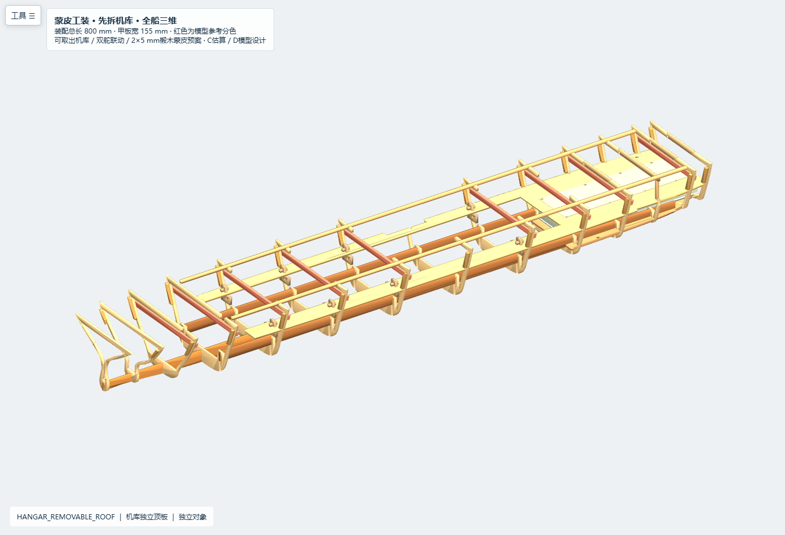
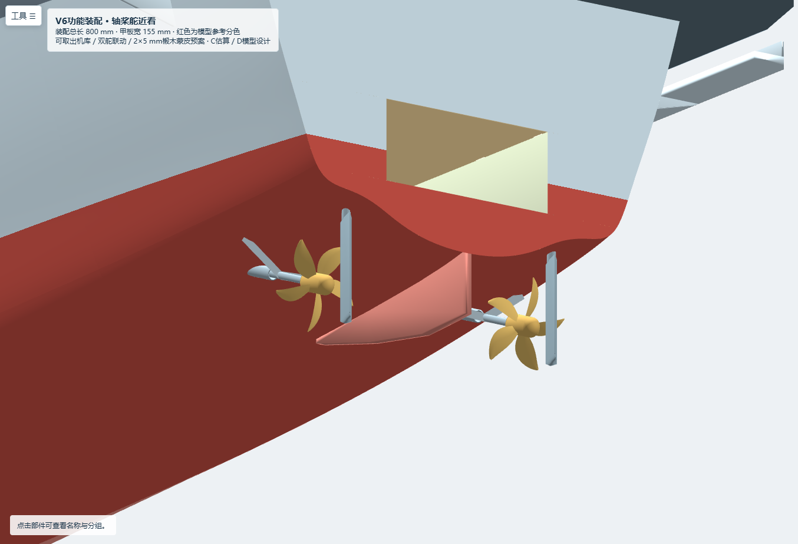
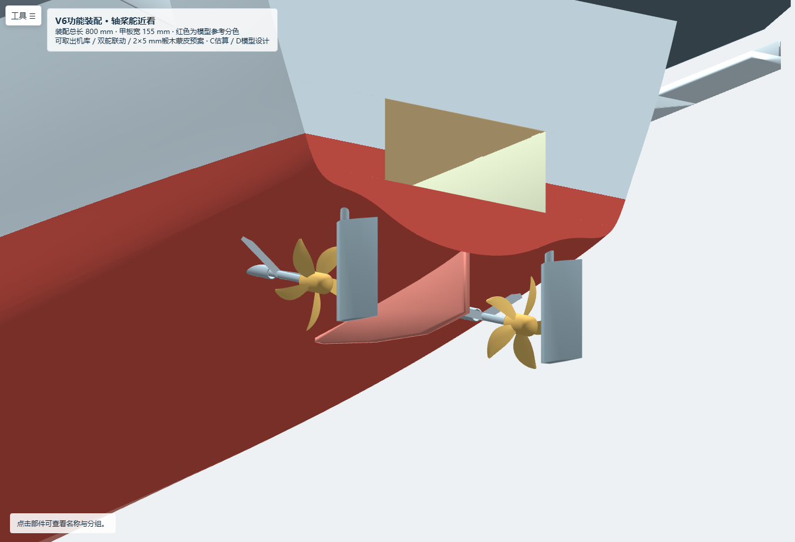
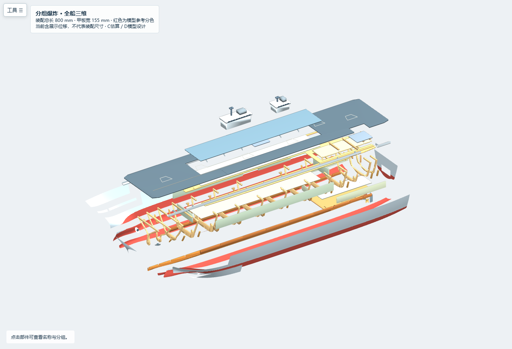
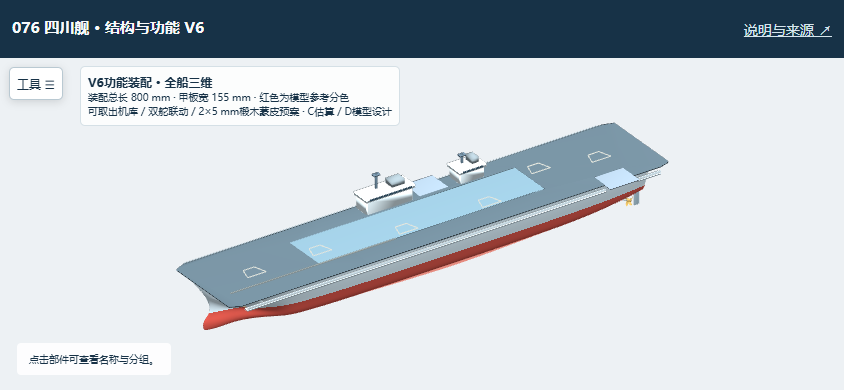
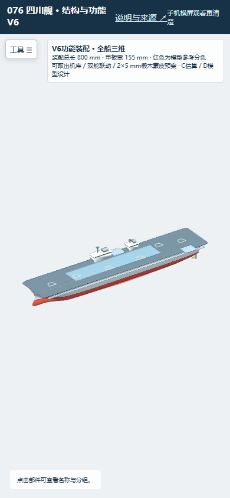

本版可供结构与拆装评审，不能直接用于切割或作为下水依据。800 mm总长是项目约束；其余精确尺寸属于C公开估算缩尺值或D模型设计。内部结构、球鼻艏和轴桨舵不代表076真实工程结构。Z32仅为参考高度。
- 保留V5船体母面与双舰岛；本次没有重新拟合实舰外形。
- 机库增加独立3 mm底板，整体外包络X190～595、Y−35～41、Z44～76；内部净空间仍为399×70×26 mm。
- 增加检修甲板X187～598、Y−37.5～42、Z76～79；先取甲板，再拔照明接线，再竖直取出机库。无需拆两座舰岛。
- 右舷机库墙开52×23 mm矩形口，X430～482、Z47～70，对齐右舷升降机的纵向位置；墙顶保留3 mm横楣。左舷艉部升降机X680～732在机库末端之外，未错开到这座机库墙上。
- 机库下方增加8个带插槽的承托架及8个独立插销，名义底板承托面积144 mm²。插销穿过承托架上方孔，支在固定横板上；这只是可制造性概念，实物材料承载尚未验证。
- 两个舵叶及舵杆可沿原生舵杆轴联动±30°，回中；保留螺旋桨启动、暂停和RPM演示。舵机、舵臂、连杆、轴承及密封尚未选型，网页演示不等于已安装可控硬件。
- 蒙皮参数改为2 mm厚、约5 mm宽椴木条，胶层工作余量0.2 mm；12片肋骨按母面2.2 mm法向内缩包络修边，龙骨底边按Y±1.5 mm横向厚度取包络，并加0.02 mm离散余量。此操作保持外形参考曲面不变。
- 上部侧弧加入3 mm贴片；蒙皮工装模式显示9个真正跨越两舷的临时横撑。X460右舷及X710左舷受升降机影响，未把悬空横撑放在这些位置。
FRAME_13_X750, FRAME_14_X772保留原有连通轮廓。直接裁到2.2 mm包络会切断下横板插槽外侧的底部腹板，所以没有导出断开的肋骨。这里必须联合调整艉部下横板、坞舱底衬和插槽，当前仍是REVIEW。不能把本版12片修边解释为全船已经满足2 mm蒙皮余量。
3D法向偏移截面以采样多边形裁切板边，尚需完整最近点复核，尤其是弯曲艏底、下横板和艉部衬板。没有生成闭合蒙皮实体，没有做重量、浮力或防水试验。
- .3dm回读：287个有效原生对象，毫米，零Mesh，5个命名视图，总长严格800 mm。
- 215个V5对象几何编码完全一致；船体母面与艉门开口保留。
- 固定结构178组包围盒候选进行实体相交检查，无新增正体积冲突；历史舰岛彩色窗块和桅杆/雷达的重叠另行记录，不冒充制造零件。
- 检修甲板和整座机库分别做130 mm连续保守包络竖直扫掠，与固定板件和舰岛无相交；向下0.1 mm会碰到承托，机库不再悬空。
- 双舵±30°共122个位置与闭合轴系实体无正体积相交。薄桨叶的全角度三角面碰撞、舵机扭矩、连杆运动与轴封仍待验证。
- 浏览器180组视角/环绕检查，287个对象逐件位移/复位；实测舵角回中、机库整体取出、桨暂停和手机844×390横屏。离线HTTP请求及脚本错误为零。
- Rhino桌面打开与原生Zebra：NOT_CHECKED。实物承压、装配、密封、下水：NOT_VERIFIED。
1. 先做槽宽试片与三肋骨短段样件，用同批3 mm板和2×5 mm椴木条测试插接、湿弯/预弯和实际手工压贴。记录压贴前后宽度、松夹回弹、插槽松动与裂纹；不虚构允许压力。
2. 主龙骨、肋骨、纵梁和上下横板在平直工装上定位；安装肋骨侧贴片。艉部REVIEW问题解决后，才进行完整蒙皮。
3. 撤去机库、飞行甲板及会妨碍蒙皮的功能件，安装9个临时横撑。横撑与相邻肋骨端面贴合，需要临时夹具固定；夹具本身未建模。两舷交替压贴，避免把横撑误留在成品机库中。
4. 装承托架：从固定横板下方插入上榫，在横板上方穿入独立3 mm插销；现场校核槽宽、插销固定和承托面的高度。机库底板放在8处承托面上。
5. 机库前、后、左右墙和独立底板组成可取出的盒；顶板仍为单独对象。放回机库后接上可拔照明线，再放检修甲板。定位与防水压紧件待选，不以摩擦配合代替防水验证。
6. 舵杆、舵臂、连杆、舵机与轴承在硬件确定后重新核验。当前只提供原轴线与演示角度，不按076实舰轴舵配置解释。
网站提供历史版本、当前三维模型、报告和Rhino下载。拿到链接即可浏览，无需登录。手机横屏，工具可收起；浏览器不允许自动旋转时请手动旋转。历史版本页面有历史标记，以本版REVIEW事项为准。
source/build_service.py从包内inputs/v5读取基线，不依赖外部旧输出目录。source/make_viewer.py从同一组参数生成离线网页。第三方Python库按requirements.txt安装，Three/OrbitControls已随包保留。执行build_service.py、verify_service.py、make_viewer.py和两个Node测试；浏览器检查需要本机Edge及Playwright。source/write_report.py根据验证JSON更新报告。
主目标仍在进行：硬件未选、全船蒙皮余量未放行、实体装配和下水未验证。









